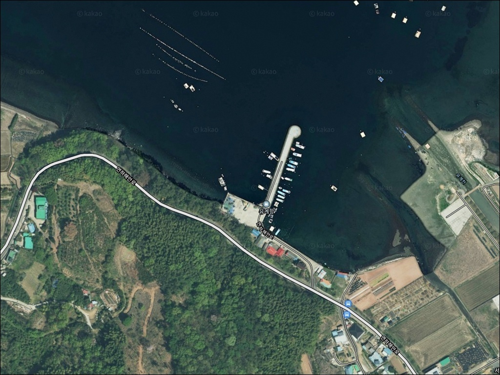
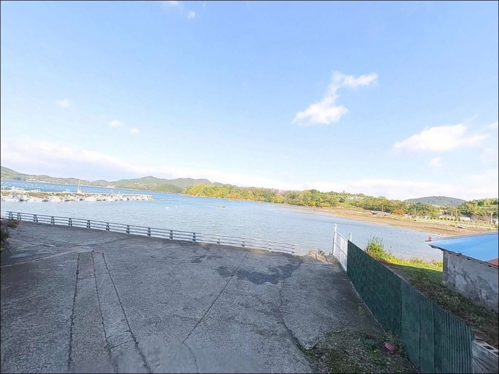
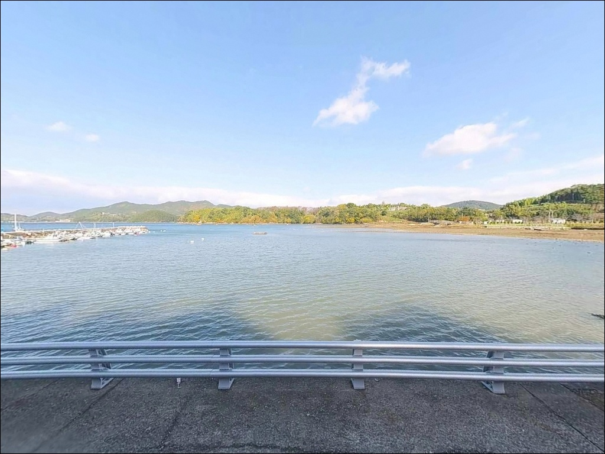
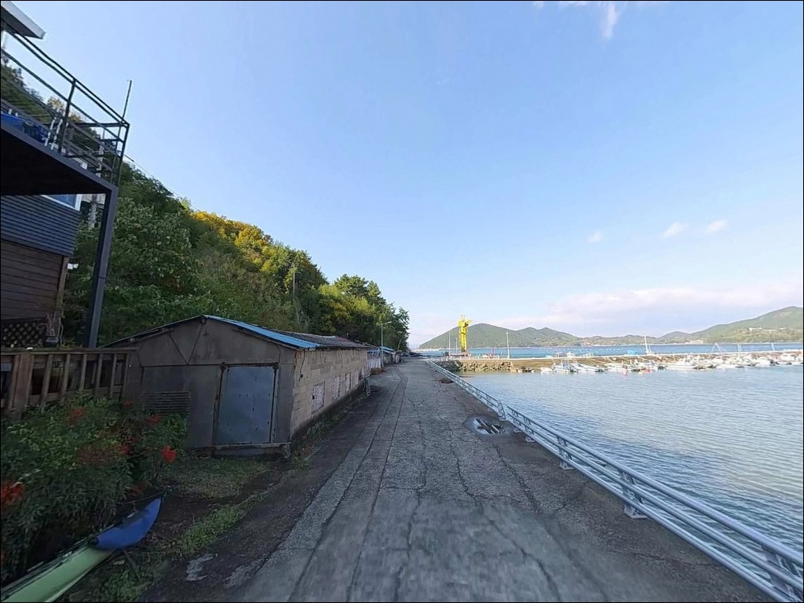
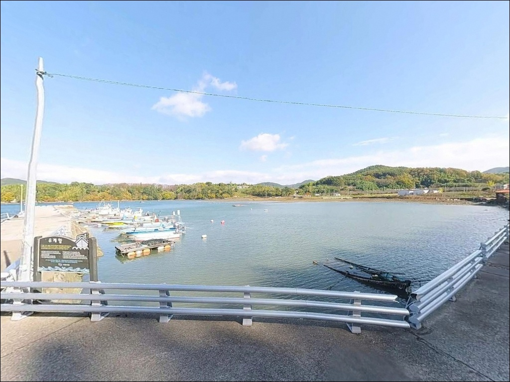
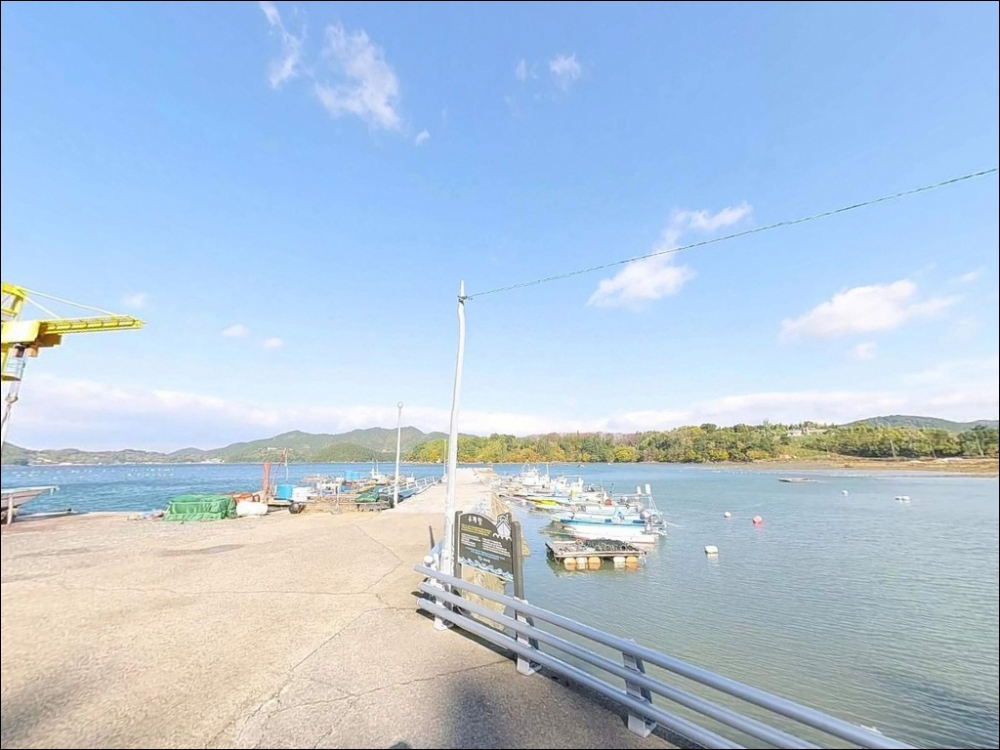
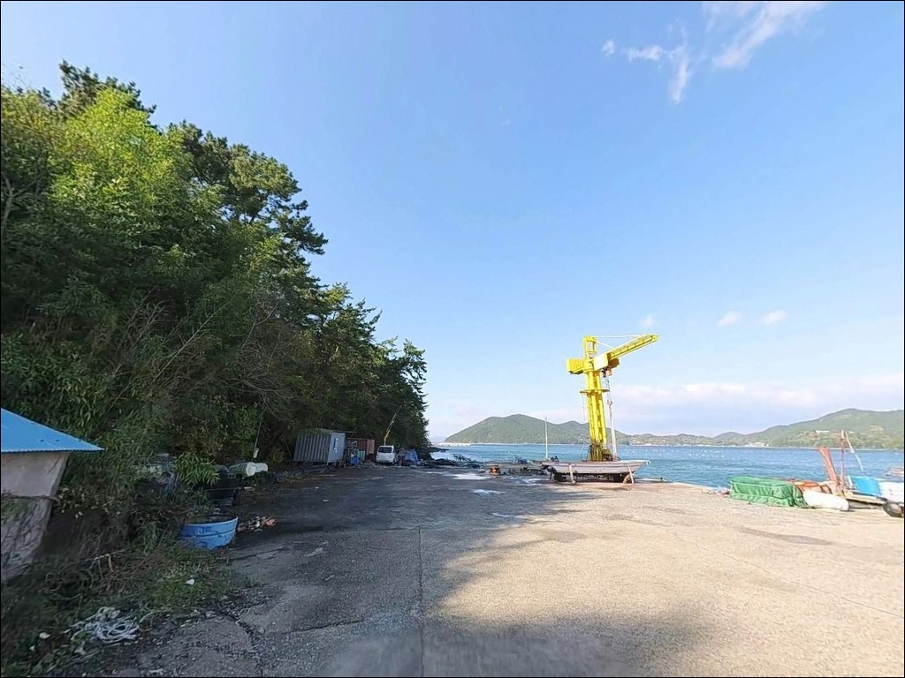
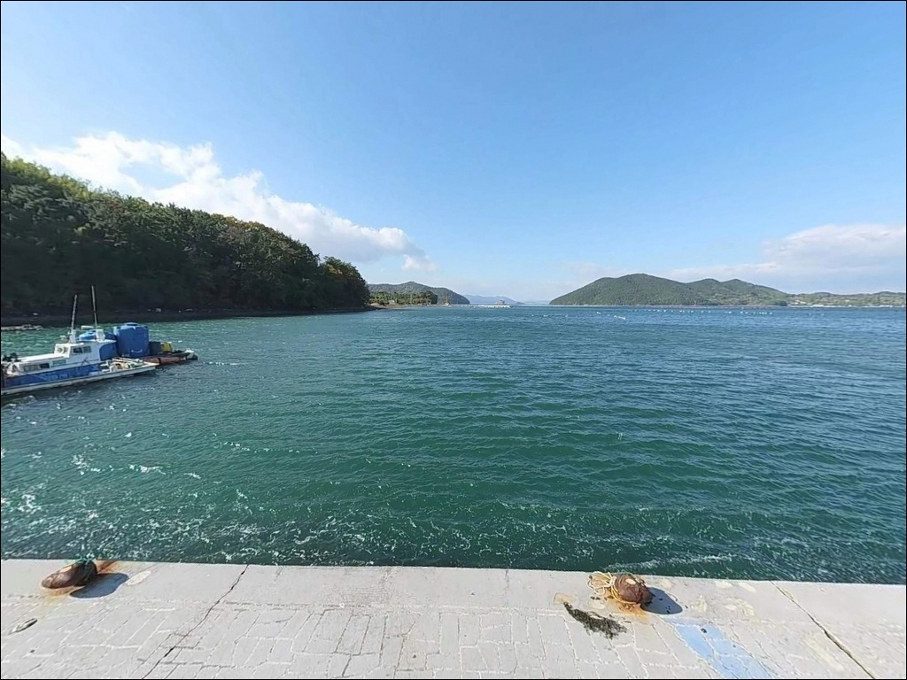
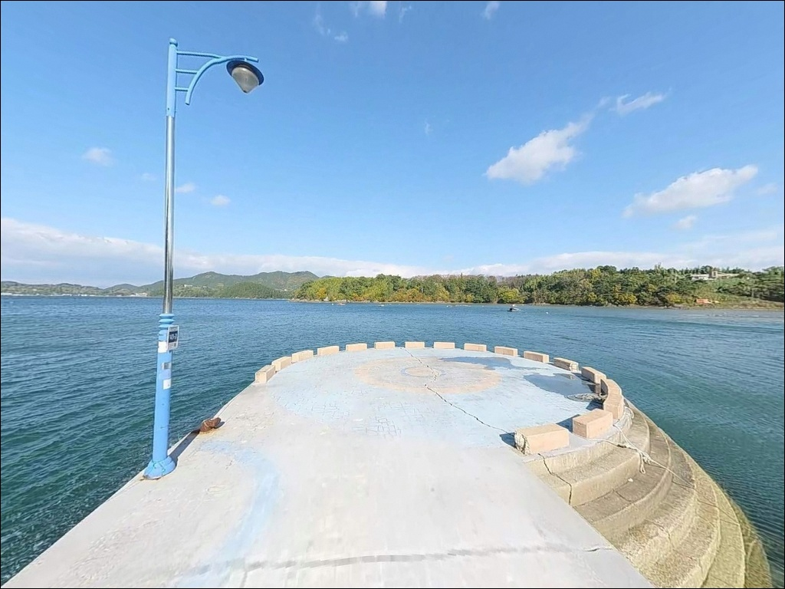

이 페이지에는 광고(제휴 링크 포함)가 있으며, 광고 링크를 통해 구매하면 운영자가 판매 수익 또는 수수료를 받을 수 있습니다. 포인트 사진: 카카오맵 스카이뷰·로드뷰. 이 페이지의 지도·사진 이미지는 카카오맵의 실제 서비스 이미지와 다를 수 있습니다.

유계항
경남 거제시 하청면 유계리 1054-5
칠천량 내만이라는 이름만 듣고
조류를 가볍게 여기다가
채비가 걷잡을 수 없이 흘러버리는 상황,
이 포인트에서 처음 방문자들이 겪는
가장 흔한 실수입니다.
거제 본도와 칠천도 사이를 흐르는 칠천량은
내만이지만 조류 소통이 상당한 해협 수역이라
물때 판단이 채비 운용의 기본 조건입니다.
이 글은 유계항의 방파제 구조와 수심 여건,
진입 동선과 차박 가능성,
낚시 스타일별 공략 조건에 집중합니다.
조황 단정이나 특정 어종 보장은
이 글의 범위에 포함되지 않습니다.

유계항은 하청면 유계리 해안을 따라
차량이 직접 진입하는 구조입니다.
진입로 전 구간이 포장도로로 연결되어 있어
비포장이나 험한 흙길 걱정은 없습니다.
도로 폭은 승용차는 물론
캠핑카도 무리 없이 회차할 수 있는 수준으로
어항 내부 선착장 공간 자체가 비교적 넓습니다.
주차는 방파제 시작 지점과
선착장 배후 콘크리트 공터를 활용합니다.
10여 대 이상 수용할 수 있는
평탄한 공터가 확보되어 있으며,
낚시 자리 바로 뒤편에 주차가 가능한 구간이 있어
장비 이동 동선이 짧습니다.
다만 어선 계류 및 조업 공간과
낚시 자리가 겹치는 구간이 있습니다.
어민들의 작업 동선을 먼저 파악하고
주차 위치를 정하는 것이 기본 매너입니다.

유계항은 항내 가로등이 설치되어 있어
야간 활동이 비교적 수월합니다.
완전한 암흑 환경이 아니라
기본 조명이 확보된 수준이라,
야간 낚시 후 차에서 머무는 동안
최소한의 시야 확보가 가능한 환경입니다.
마을과 어느 정도 거리를 두고 있어
소음 민감도는 낮은 편입니다.
어촌 특유의 새벽 어선 출항 소음은
감안해야 하며,
어민들의 작업을 방해하지 않는
정숙 유지가 차박 체류의 기본 조건입니다.
주차 공간이 넓고 낚시 자리와 붙어 있어
짐을 차에 두고 낚시하기 편한 구조입니다.
다만 공식 캠핑장이나 지정 야영 구역이 아니므로
취사와 불 사용은 자제하고,
쓰레기는 전량 회수하는 것이
이 포인트를 오래 쓸 수 있는 방법입니다.

유계항에서 차량으로 5분 거리인
하청면 소재지로 이동하면
농협 하나로마트, 편의점, 주유소 등
기본 인프라를 모두 이용할 수 있습니다.
출발 전 장비나 식량이 부족하다면
하청면 소재지를 기점으로 삼아
보충한 뒤 포인트로 이동하는 동선이 효율적입니다.
반경 10km 권으로 확장하면
거제시청이 있는 고현 읍내까지 이어지며
대형 병원과 약국도 접근 가능합니다.
응급 상황 발생 시 완전 고립형 포인트가 아니라는 점이
유계항의 현실적인 장점입니다.

유계항 방문 전 가장 먼저 확인할 것은
물때입니다.
칠천량은 거제 내만권에 속하지만
두 섬 사이 해협 구조상 조류 흐름이 꾸준하게 살아 있어,
바다타임에서 하청면 유계리 기준 물때를 확인하고
들물 타임에 맞춰 자리를 잡는 방식이
이 포인트 공략의 기본 흐름입니다.
기상 변화에 대한 사전 확인도 필수입니다.
내만권이라 외해보다 파도 영향은 적지만
바람 방향이 바뀌면 외항 방향 낚시에
직접 영향이 생깁니다.
출발 당일 기상청 예보를 다시 확인하고,
풍속이 강할 때는 외항 캐스팅 방향을 조정하는
유연한 대응이 필요합니다.
원투낚시용 채비 손실이 생길 수 있으므로
여분 채비를 넉넉히 준비하는 편이 좋습니다.
어선 통행 구간에서의 캐스팅은
어민 작업과 충돌이 생기므로
반드시 피해야 하며,
야간에는 구명조끼와 헤드랜턴이
기본 장비입니다.

유계항의 핵심 지형은
ㄴ자로 꺾인 콘크리트 방파제와
선착장을 둘러싼 석축 구간입니다.
방파제 끝단 기준으로 만조 시
수심 5~7m 내외가 형성되며,
내만 구조 덕분에 파도 영향이 적어
가벼운 채비 운용에 유리한 조건입니다.
다만 이 포인트가 면한 수역은
칠천량 해협입니다.
거제 본도와 칠천도 사이를 흐르는 해협 구조상
조류 소통이 활발하게 이루어져,
물때에 따라 항 입구 방향 흐름이
채비 컨트롤에 직접적인 영향을 줍니다.
내만이라고 해서 조류를 무시하면
원투 채비가 예상보다 많이 흘러버리는 상황을
맞닥뜨릴 수 있습니다.
바닥은 뻘과 모래, 수초 지대가 혼재하는 구조로
밑걸림은 심하지 않은 편입니다.
방파제 외항 측 석축 주변에는
볼락과 노래미가 은신하기 좋은
구조물 틈이 형성되어 있습니다.
최신 조황은 출조 전 반드시 검색해 보시기 바랍니다.

이 포인트의 대표 방식은
농어 루어낚시입니다.
장마철 강우 이후 유입되는 탁도와
칠천량 조류 흐름이 맞물리는 시기에
방파제 끝단과 외항 석축 주변에서
워킹 루어 반응이 살아나는 구간이 형성됩니다.
야간 방파제 가로등 아래를 기점으로
탐색하는 방식이 유효합니다.
원투낚시도 이 포인트 구조에 잘 맞습니다.
외항 정면 방향으로 투척하면
모래·뻘 혼합 바닥층을 공략할 수 있어
도다리, 보리멸 등 저서어종을 노리기에
적합한 조건입니다.
밑걸림이 적어 원투 입문자에게도
부담이 낮은 포인트이기도 합니다.
찌낚시는 방파제 콧부리에서
외항 방향으로 감성돔을 노리는
릴찌낚시 방식이 이 해역의 기본 패턴입니다.
들물 타임에 조류가 흐르는 방향을 파악하고
채비를 흘리는 방식이 이 포인트에 맞습니다.
볼락 라이트게임도 가능한 스팟입니다.
외항 석축과 방파제 구조물 틈이
볼락 서식 조건을 갖추고 있으며,
야간에 소형 지그헤드 채비로
석축 경계를 천천히 훑는 방식이 어울립니다.
가을 이후 씨알이 올라오는 경향이 있습니다.

유계항 조류가 너무 강하거나
주차 여건이 여의치 않을 때
가장 먼저 이동할 대안은
칠천도 황덕방파제입니다.
칠천교를 건너 약 7km 거리에 있으며
같은 칠천량 해역권으로
조류 패턴이 유사합니다.
포인트 규모가 더 크고 수심이 깊어
낚시 방식의 선택 폭이 넓습니다.
거제 하청면 어온리 방향의
어온방파제도 실용적인 대안입니다.
유계항에서 차량으로 10분 이내 거리에 있으며
농어·감성돔 원투·루어 패턴이
유계항과 비슷하게 적용됩니다.
하청면에서 사등면 방향으로
약 9~10km 이동하면
가조도 가조대교 방파제에 닿습니다.
야간 다리 조명이 집어 역할을 해
갈치낚시 포인트로 알려진 곳이며,
방파제 인근에 공중화장실이 위치해
편의 조건도 우수합니다.
차박 대안 후보로는
칠천량해전공원 인근 주차장이 있습니다.
차량 수용 규모가 크고 해안 접근성이 좋아
낚시 겸 차박 대안지로 활용할 수 있습니다.

생활낚시 위주의 조용한 포인트를 찾는 낚시인이라면
유계항의 조건은 잘 맞는 구조입니다.
ㄴ자 방파제와 넓은 선착장 공터,
전 구간 포장 진입로는
몸 챙겨 가면 바로 낚시대를 펼 수 있는
실용적인 환경입니다.
원투, 루어, 찌낚시를 고루 운영할 수 있어
동행자와 방식을 나눠 공략하기에도
무리 없는 구조입니다.
다만 칠천량 조류 흐름을 가볍게 보면
채비 컨트롤이 예상보다 어려워지는 상황이 생깁니다.
물때 확인, 들물 타이밍 계산,
기상 사전 점검, 이 세 가지를 갖추고
유계항 방파제 끝단에 서면
기대에 맞는 출조가 될 수 있는 포인트입니다.
주차와 진입 여건이 좋아
낚시를 마치고 조용히 하룻밤 머무는
차박 출조로도 욕심 없이 즐길 수 있는 곳입니다.